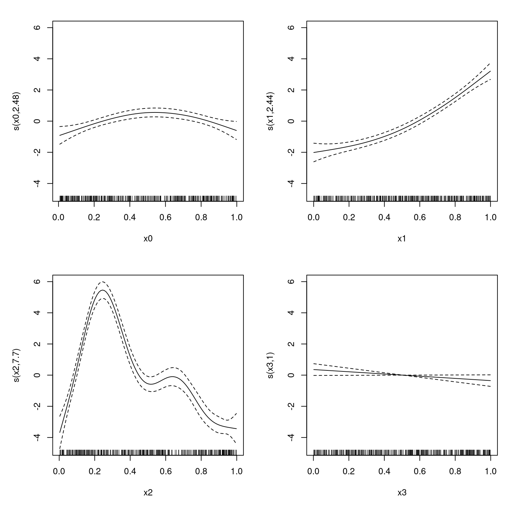
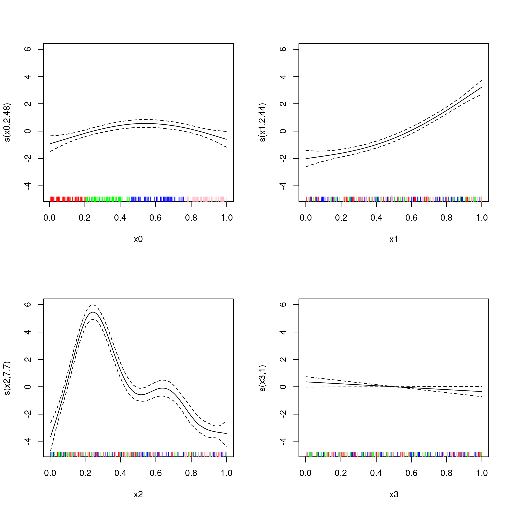

library(mgcv)Loading required package: nlmeThis is mgcv 1.9-1. For overview type 'help("mgcv-package")'.# generate our fave data
set.seed(2)
dat <- gamSim(1,n=400,dist="normal",scale=2)Gu & Wahba 4 term additive modelDavid L Miller
July 1, 2024
This article is designed as a gentle introduction to the neighbourhood cross-validation fitting method available in mgcv version 1.9-0 onwards. Here I’ll focus on the theory of how this stuff works and I’ll try to write some further articles on the practical side of implementing this in particular situations for those interested in that kind of thing.
The primary reference for this is Simon Wood’s arXiv preprint, along with some discussions with Simon and others about various stuff. Thanks to those who listened to me yakk-on about this.
When we fit statistical models, we generally need to know what the performance of our model would be outwith the data we fitted it to. We want to know that the model is not overfitting to the data and that it has some ability to predict “out-of-sample.” This can be tackled as a post-hoc calculation (holding back some subset of the data when fitting the model and then comparing predictions to the real values in the data), or it can be part of the model fitting procedure.
We could think of a simple case where we have \(n\) data, we take each of those data in turn and leave it out of the dataset, fitting to the remaining \(n-1\) data, then predicting back to that one remaining datum (this is leave-one-out cross-validation, or “LOO”). The idea being that model parameters that are good for all of these subsets are a better, more general fit than if we’d fitted to the whole dataset together.
There are a couple of issues with this in practice:
Various adaptations have been made to deal with these situations. To combat computational issues, folks use \(k\)-fold cross-validation where the \(n\) data are separated into \(k\) partitions, each one of which is systematically dropped and predicted, in the same way that individual data are for the LOO case. There are also approximations to LOO, like generalized cross-validation1 (GCV), which is the default method used in mgcv. Instead of refitting many times, we can use the GCV criterion to optimize: \[
\mathcal{V}_\text{GCV} = \frac{\vert\vert \mathbf{W}^{1/2} \{ \mathbf{y} - \mathbf{Ay}\} \vert\vert^2 }{1-\text{tr}(A)/n^2}
\] where \(\mathbf{y}\) are the response data, \(\mathbf{A}\) is the hat matrix2, \(\text{tr}(\mathbf{A})\) is the trace3 of the matrix \(\mathbf{A}\) and \(\mathbf{W}\) are iterative weights calculated during fitting4. Using \(\mathcal{V}_\text{GCV}\) is useful because we can find it’s derivatives and use those during the optimisation procedures when fitting the model. This is the criteria which is optimized when we use method="GCV.Cp" in our call to gam().
Even using the above “tricks”5, we still face the second issue of autocorrelation. This can be addressed by selecting the points that go into the partitions to take into account structure in the data. For example, splitting a study area into blocks geographically, dropping each and fitting to the remaining bocks might be an appropriate strategy for spatial data. Roberts et al. (2017) show some useful strategies for cross-validation for common situations in ecological modelling.
Another advantage of the cross-validation approach is that parallelisation is fairly straight-forward: you need to fit a series of models that don’t interact with each other, so you can run them on different cores/processors/machines.
To extend these ideas a little further: what if we could do a quick version of cross-validation (using some approximation, say) but for arbitrary blocking schemes, which we can use to account for the autocorrelation issues described above.
The new method="NCV" (Wood, 2024) option in mgcv implements a smart version of cross-validation that allows one to specify a set of arbitrary “neighbourhoods” to perform fitting and predicting on. While doing this fitting, we are able to calculate derivatives of the score function we’re using, so we can know which direction to move our parameters. What results is a fast, easily parallelisable, flexible fitting method which can be used to account for autocorrelation in the data without having to fit a separate correlation structure via, say, an autoregressive process in gamm or somesuch.
The idea is relatively simple: define your neighbourhoods, fit to each ensuring that parameters are best for all the neighbourhoods.
It’s worth noting at this point that like the other methods used to “fit a GAM”, what we’re really talking about here is a criterion for estimating smoothing parameters (hyperparameters). As is the case with other methods, we rely on regular GLM-fitting conditional on the smoothing parameters, so we need to get those smoothing parameters reliably for everything to work6
So, we setup the criterion, which we can write as: \[ \mathcal{V}_\text{NCV} = \sum_{k=1}^m \sum_{i \in \delta(k)} \mathcal{D}(y_i, \mathbf{\theta}_i^{-\alpha(k)}) \] where we first let \(\alpha(k)\) be the \(k^\text{th}\) subset of data to drop and \(\delta(k)\) be the corresponding \(k^\text{th}\) subset to predict. So \(\mathcal{D}(y_i, \mathbf{\theta}_i^{-\alpha(k)})\) gives the likelihood7 for parameter estimates with the subset \(\alpha(k)\) missing. We do this for \(k=1, \ldots, m\) subsets of the data.
To make the above concrete, we can think about some common cases:
One of the contributions in the paper is how to calculate derivatives of \(\mathcal{V}_\text{NCV}\) so that we can use the technique effectively in mgcv. I’ll not duplicate those details here.
Let’s have a go at using NCV. First loading mgcv and generating some data to play with:
Loading required package: nlmeThis is mgcv 1.9-1. For overview type 'help("mgcv-package")'.Gu & Wahba 4 term additive modelThe default option if we set method="NCV" and if we don’t include a neighbourhood via the nei= argument, is leave-one-out (LOO) cross-validation. We can do this as follows:
Family: gaussian
Link function: identity
Formula:
y ~ s(x0) + s(x1) + s(x2) + s(x3)
Parametric coefficients:
Estimate Std. Error t value Pr(>|t|)
(Intercept) 7.8333 0.1005 77.95 <2e-16 ***
---
Signif. codes: 0 '***' 0.001 '**' 0.01 '*' 0.05 '.' 0.1 ' ' 1
Approximate significance of smooth terms:
edf Ref.df F p-value
s(x0) 2.484 3.096 6.533 0.000229 ***
s(x1) 2.438 3.029 83.167 < 2e-16 ***
s(x2) 7.701 8.567 94.181 < 2e-16 ***
s(x3) 1.000 1.000 3.588 0.058963 .
---
Signif. codes: 0 '***' 0.001 '**' 0.01 '*' 0.05 '.' 0.1 ' ' 1
R-sq.(adj) = 0.715 Deviance explained = 72.5%
NCV = 1618.9 Scale est. = 3.9025 n = 400
Note that this is fast and the fits look good.
Let’s define a goofy neighbourhood structure, where we just have four bits, in the order of one of the covariates.
Begin with the list we need to store everything:
This object will contain our \(\alpha(k)\) and \(\delta(k)\) information (albeit in a slightly convoluted way).
The leave-outs (\(\alpha(k)\)’s) are in the k element of the list. This is a vector of data indices in such an order that each of our cross-validation blocks is contiguous. If our first block is size b then we can get the block indices via k[1]:k[b].
In our case we want the variable x0 chopped into 4 equal-sized, contiguous blocks of length 100. We can do this by getting the order of x0:
Next we need to set the end points of the blocks in the element m, which in our case will be 100, 200, 300 and 400:
For the predictions (\(\delta(k)\)’s) we have a similar structure, k is now i and m is now mi (these should be the same length).
Here let’s try to predict only at the points we dropped each time. In that case i == k:
and mi == m
We can now try to fit that by supplying nb as the nei= argument:
Family: gaussian
Link function: identity
Formula:
y ~ s(x0) + s(x1) + s(x2) + s(x3)
Parametric coefficients:
Estimate Std. Error t value Pr(>|t|)
(Intercept) 7.83328 0.09885 79.24 <2e-16 ***
---
Signif. codes: 0 '***' 0.001 '**' 0.01 '*' 0.05 '.' 0.1 ' ' 1
Approximate significance of smooth terms:
edf Ref.df F p-value
s(x0) 3.894 4.802 5.263 0.00017 ***
s(x1) 2.389 2.968 82.370 < 2e-16 ***
s(x2) 7.466 8.416 88.319 < 2e-16 ***
s(x3) 1.000 1.000 4.386 0.03689 *
---
Signif. codes: 0 '***' 0.001 '**' 0.01 '*' 0.05 '.' 0.1 ' ' 1
R-sq.(adj) = 0.715 Deviance explained = 72.5%
NCV = 1635.4 Scale est. = 3.9089 n = 400Note that the NCV score has changed (of course).
Let’s plot that but showing the groupings in the rug plot, colour-coded:
par(mfrow=c(2,2))
blerg <- lapply(1:4, function(x){
plot(b2, select=x, rug=FALSE)
rug(dat[[paste0("x", x-1)]][nb$k[1:nb$m[1]]], col="red")
rug(dat[[paste0("x", x-1)]][nb$k[(nb$m[1]+1):nb$m[2]]], col="green")
rug(dat[[paste0("x", x-1)]][nb$k[(nb$m[2]+1):nb$m[3]]], col="blue")
rug(dat[[paste0("x", x-1)]][nb$k[(nb$m[3]+1):nb$m[4]]], col="pink")
})
Performance here is probably good because of the jumbled nature of the other covariates in the model ensuring good fit.
Neighbourhood cross-validation seems like a very promising method for fitting GAMs. Some advantages:
So, give it a go. I’ll try to post further examples here as I get to them.
Which is equivalent to AIC and Mallow’s \(C_p\), see Stone (1977).↩︎
Also called the projection matrix or influence matrix. I like hat matrix, because it’s what puts the hats on the predictions – it’s the matrix that maps the data \(\mathbf{y}\), say, to it’s predictions \(\hat{\mathbf{y}}\), so \(\hat{\mathbf{y}} = A\mathbf{y}\).↩︎
Sum of diagonal elements: \(\sum_j A_{jj}\) or in R sum(diag(A)).↩︎
I’ll write something about P-IRLS and all this stuff at some point.↩︎
Note that there’s still a major issue with methods like GCV (“prediction error based methods”, as opposed to likelihood-based methods like REML): they tend to be more sensitive to underfitting, so models end up more smooth than they should. See, e.g., Reiss and Ogden (2009).↩︎
Things are a bit more complicated than this, but this is the basic idea. I will hopefully at some point write something about that.↩︎
More generally, this can be the loss function for the problem, so we can address a broader set of models, including e.g., quantile regression.↩︎